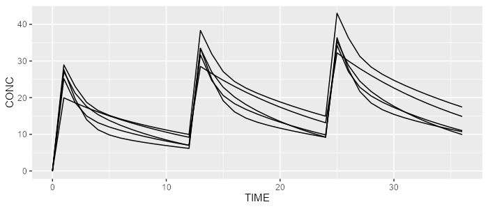

Installation
Install the latest stable release using devtools:
devtools::install_github("Calvagone/campsismod")Basic examples
Load example from model library
Load 2-compartment PK model from built-in model library:
library(campsismod)
model <- model_suite$pk$`2cpt_fo`Write CAMPSIS model
list.files("path_to_model_folder")
#> [1] "model.campsis" "omega.csv" "sigma.csv" "theta.csv"Read and show CAMPSIS model
model <- read.campsis(file="path_to_model_folder")
show(model)
#> [MAIN]
#> TVKA=THETA_KA
#> TVVC=THETA_VC
#> TVVP=THETA_VP
#> TVQ=THETA_Q
#> TVCL=THETA_CL
#> TVPROP_RUV=THETA_PROP_RUV
#>
#> KA=TVKA * exp(ETA_KA)
#> VC=TVVC * exp(ETA_VC)
#> VP=TVVP * exp(ETA_VP)
#> Q=TVQ * exp(ETA_Q)
#> CL=TVCL * exp(ETA_CL)
#> PROP_RUV=TVPROP_RUV
#>
#> [ODE]
#> d/dt(A_ABS)=-KA*A_ABS
#> d/dt(A_CENTRAL)=KA*A_ABS + Q/VP*A_PERIPHERAL - Q/VC*A_CENTRAL - CL/VC*A_CENTRAL
#> d/dt(A_PERIPHERAL)=Q/VC*A_CENTRAL - Q/VP*A_PERIPHERAL
#>
#> [ERROR]
#> CONC=A_CENTRAL/VC
#> if (CONC <= 0.001) CONC=0.001
#> IPRED=log(CONC)
#> W=PROP_RUV
#> Y=IPRED + W*EPS_RUV_FIX
#>
#>
#> THETA's:
#> name index value fix
#> 1 KA 1 1.0 FALSE
#> 2 VC 2 60.0 FALSE
#> 3 VP 3 10.0 FALSE
#> 4 Q 4 2.0 FALSE
#> 5 CL 5 3.0 FALSE
#> 6 PROP_RUV 6 0.1 FALSE
#> OMEGA's:
#> name index index2 value fix type same
#> 1 KA 1 1 25 FALSE cv% NA
#> 2 VC 2 2 25 FALSE cv% NA
#> 3 VP 3 3 25 FALSE cv% NA
#> 4 Q 4 4 25 FALSE cv% NA
#> 5 CL 5 5 25 FALSE cv% NA
#> SIGMA's:
#> name index index2 value fix type
#> 1 RUV_FIX 1 1 1 TRUE var
#> No variance-covariance matrix
#>
#> Compartments:
#> A_ABS (CMT=1)
#> A_CENTRAL (CMT=2)
#> A_PERIPHERAL (CMT=3)Simulate with RxODE or mrgsolve
library(campsis)
dataset <- Dataset(5) %>%
add(Bolus(time=0, amount=1000, ii=12, addl=2)) %>%
add(Observations(times=0:36))
rxode <- model %>% simulate(dataset=dataset, dest="RxODE", seed=1)
mrgsolve <- model %>% simulate(dataset=dataset, dest="mrgsolve", seed=1)
spaghettiPlot(rxode, "CONC")

RxODE simulation results
spaghettiPlot(mrgsolve, "CONC")
mrgsolve simulation results